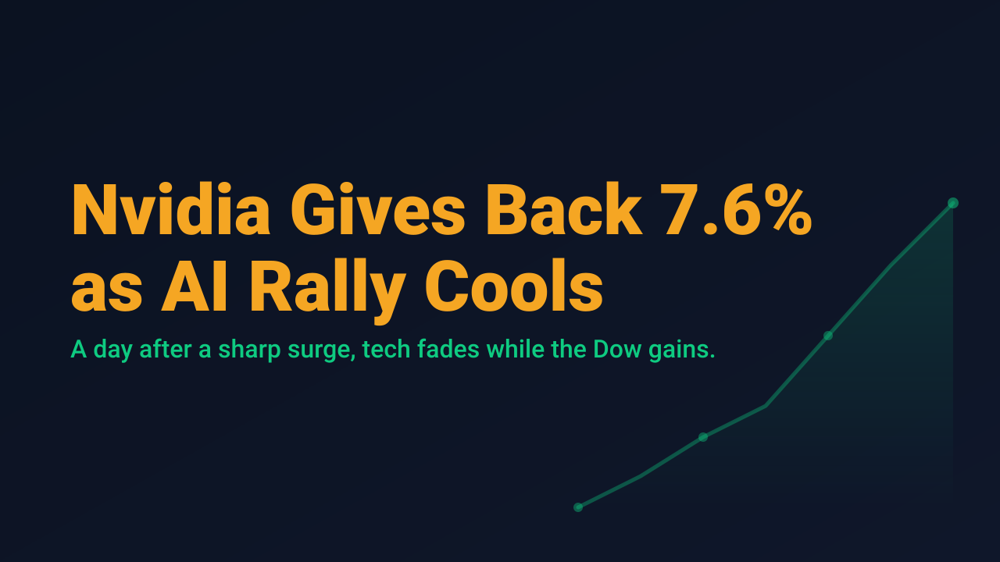
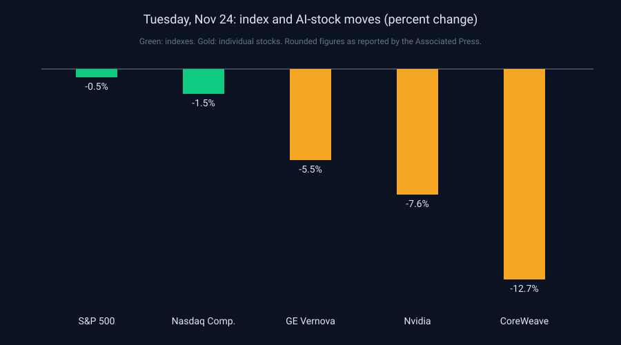

Nvidia Gives Back 7.6% as AI Rally Cools

Stocks gave back part of Monday's sharp gains on Tuesday as AI-related shares unwound. According to the Associated Press, the S&P 500 fell 0.5%, its eighth loss in the last nine days, and the Nasdaq composite fell 1.5%, the largest decline among the major indexes. The Dow Jones Industrial Average added more than 400 points. Business Upturn, reporting at 3:55 p.m. ET, put the Dow's gain at 0.81%, so the exact close may differ slightly from these rounded figures.
Nvidia fell 7.6% a day after its 31.5% gain, which the AP described as its biggest in more than two decades and which followed the return of Jensen Huang as CEO. CoreWeave fell 12.7% and GE Vernova fell 5.5%, and the AP reported that other AI stocks fell by similar amounts to Nvidia. The AP linked part of the pressure to concerns about high interest rates and possible data-center regulation after the midterm elections. A one-day reversal of this size, immediately after a one-day surge, is consistent with the mechanical, positioning-driven character that strategists attributed to Monday's rally.

Beneath the index headline, money moved elsewhere. Dollar Tree rose 10.5% and Kohl's rose 15.3%. The Conference Board's consumer confidence reading rose by more than economists expected, and FactSet said S&P 500 earnings growth is on pace to exceed 25% for a third straight quarter. In bonds, the 10-year Treasury yield eased to 4.90% from 4.92%, and Brent crude rose 2.4% to $88.78 per barrel. For swing traders, the divergence between a rising Dow and a falling Nasdaq is a reminder that index-level moves can hide significant rotation.
Abroad, Japan's Nikkei 225 gained 3.9% and South Korea's Kospi rose 6.3%.
With the market closed Thursday for Thanksgiving, trading this week is compressed into fewer sessions. Two violent days in opposite directions argue for smaller position sizes until the AI group establishes a direction of its own.